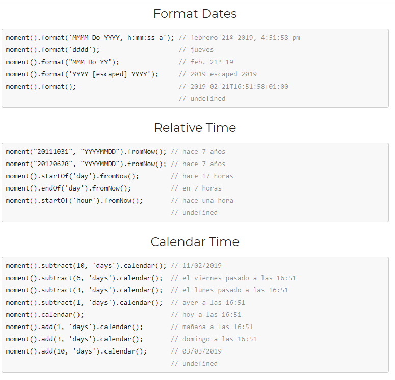
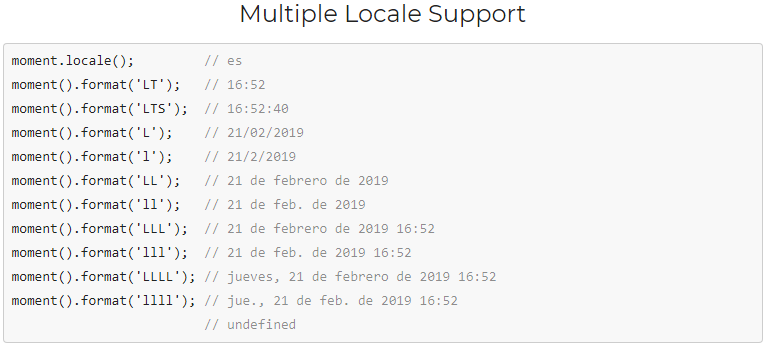

Este plugins gestiona las fechas pero no genera calendarios, el de caledarios hace uso de este, pero viene bien por si tienes que gestionar tu mismo las fechas


Para más información:
http://momentjs.com/